Un recorrido de pasión, trabajo y compromiso con Colombia
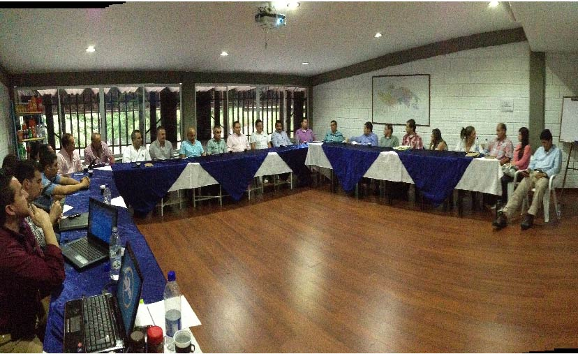
En este año nace la asociación de supermercados independientes del eje cafetero ASI-UNIDOS, con la reunión de un grupo de comerciantes que vieron la necesidad de unirse para competir contra las multinacionales que estaban llegando al mercado local. Iniciando con 9 asociados y 19 puntos de venta.
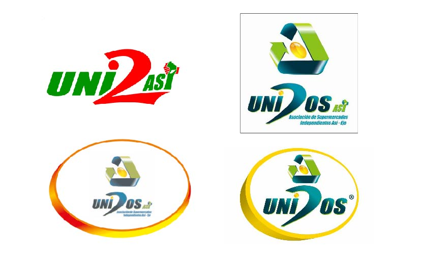
Con orgullo lanzamos la marca comercial UNIDOS, y en diciembre de 2009, presentamos al mercado nuestro primer producto con marca propia: La Natilla Unidos, un producto que refleja nuestra dedicación y tradición desde el inicio.
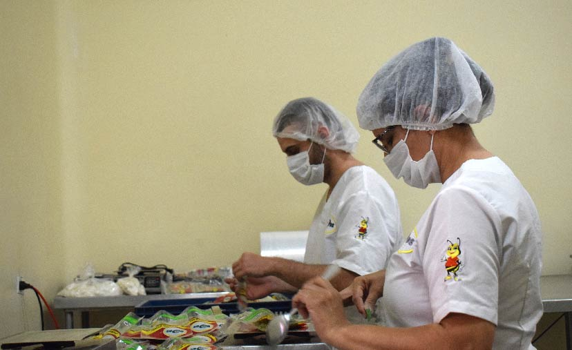
Con gran entusiasmo, anunciamos la apertura de nuestra primera planta de producción de condimentos, plantas medicinales y repostería en la Finca Zaracay, un hito que marca el inicio de una nueva etapa bajo la dirección de nuestro Asociado, Emprender. Este paso refleja nuestro compromiso con la innovación, la calidad y el crecimiento sostenible.
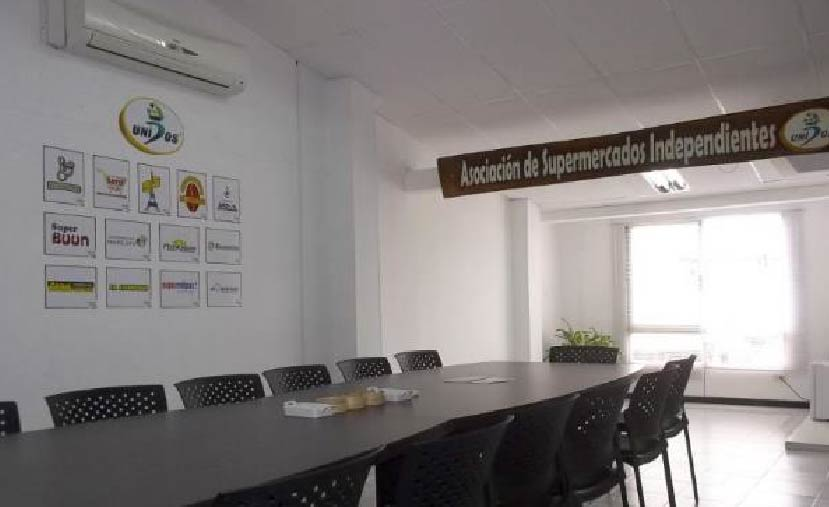
Gracias al crecimiento y fortalecimiento de ASI-UNIDOS a lo largo del tiempo, surge la creación de INDUCOLOMBIA S.A.S., nuestra primera plataforma logística de marcas propias. Su objetivo es realizar compras unificadas a proveedores locales, optimizar las entregas directas a los supermercados asociados y facilitar las actividades comerciales, impulsando así la eficiencia y el desarrollo de nuestro sector.
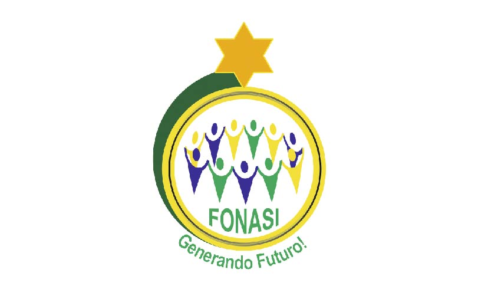
Nace el Fondo de Empleados de Supermercados Independientes, FONASI, con el propósito de apoyar a los colaboradores de las empresas asociadas en el cumplimiento de sus sueños. A través de créditos con intereses altamente accesibles, FONASI brinda una oportunidad única para que los empleados puedan alcanzar sus metas personales y profesionales, fortaleciendo así el bienestar y el crecimiento dentro de las empresas asociadas.
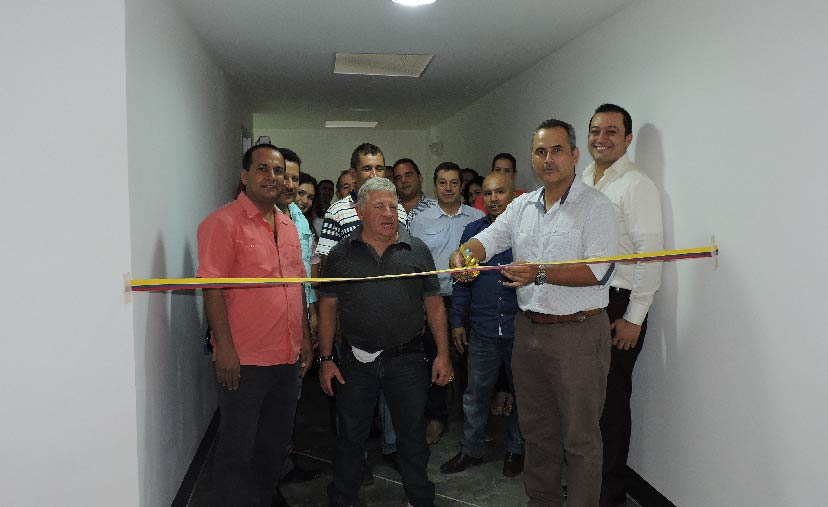
Inauguramos el Centro de Distribución de Inducolombia en Mercasa, un espacio estratégico que nos permite recibir los productos de la marca Unidos y gestionar la distribución de pedidos de manera eficiente, garantizando un servicio rápido y seguro que fortalece nuestra red de distribución y mejora la experiencia de nuestros clientes.
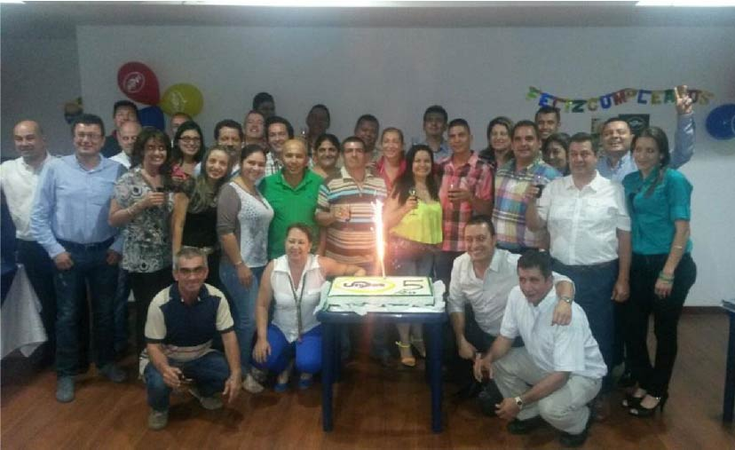
La Asociación de Supermercados Independientes del Eje Cafetero, ASI-UNIDOS, celebra 5 años de transformar el comercio local con unión, compromiso y crecimiento.
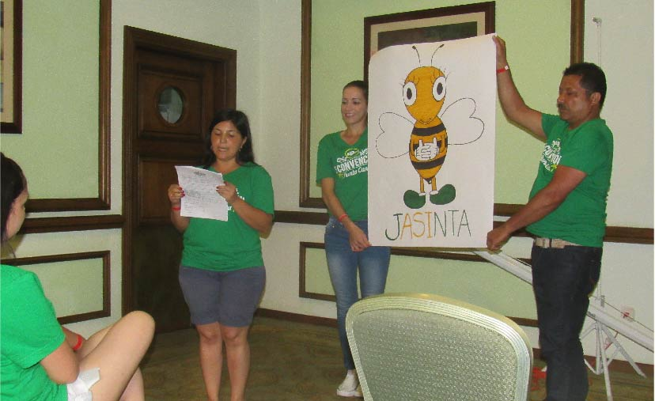
Presentamos a nuestra nueva mascota: Jasinta, un nombre inspirado en la Asociación de Supermercados Independientes. Su diseño inicial fue revelado y contó con el respaldo unánime de todos los asociados.
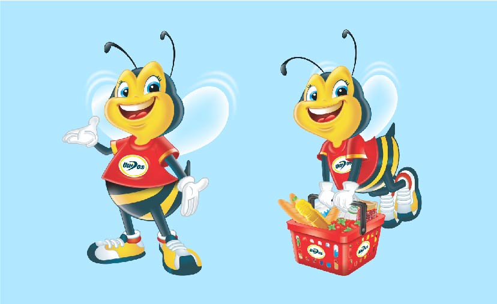
Ese mismo año se crea el diseño oficial de Jasinta, quien se convierte en la mascota oficial de la marca UNIDOS, representando nuestros valores y apareciendo en algunos de nuestros productos.
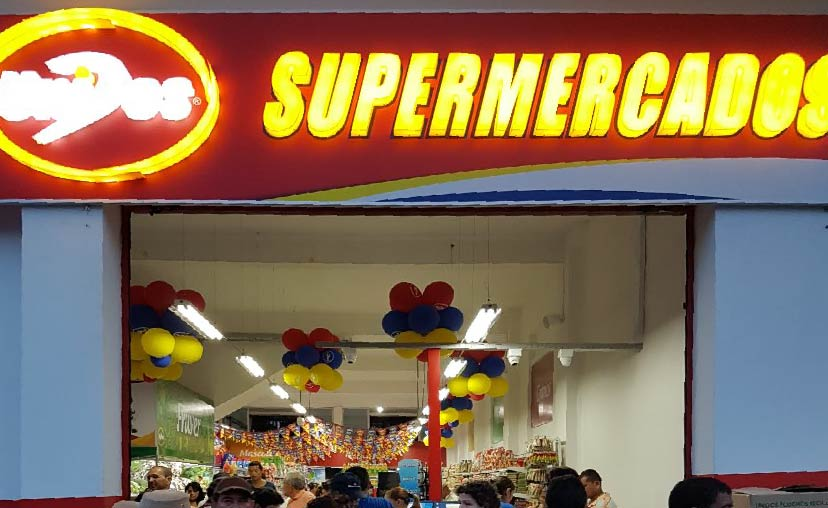
El 11 de mayo de 2017 marca un hito con la apertura del supermercado Unidos en Viterbo, Caldas. Este espacio no solo ofrecía nuestra marca propia, sino también una amplia variedad de las principales marcas comerciales, consolidándose como un punto de encuentro para calidad, variedad y confianza.
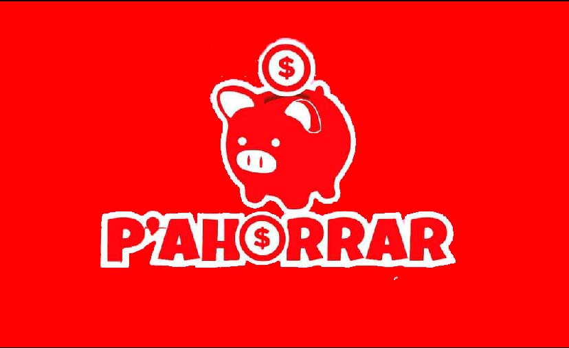
El 10 de noviembre de 2017 lanzamos nuestra segunda marca propia, P'Ahorrar, diseñada para ofrecer precios más económicos sin comprometer la calidad. Una opción inteligente que combina ahorro y excelencia en cada producto.
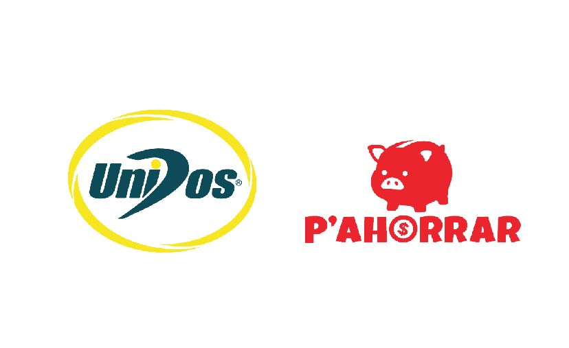
Realizamos una actualización de los logos de nuestras marcas propias, UNIDOS y P'Ahorrar, incorporando un diseño más moderno y atractivo que refuerza su identidad y conexión con nuestros clientes.
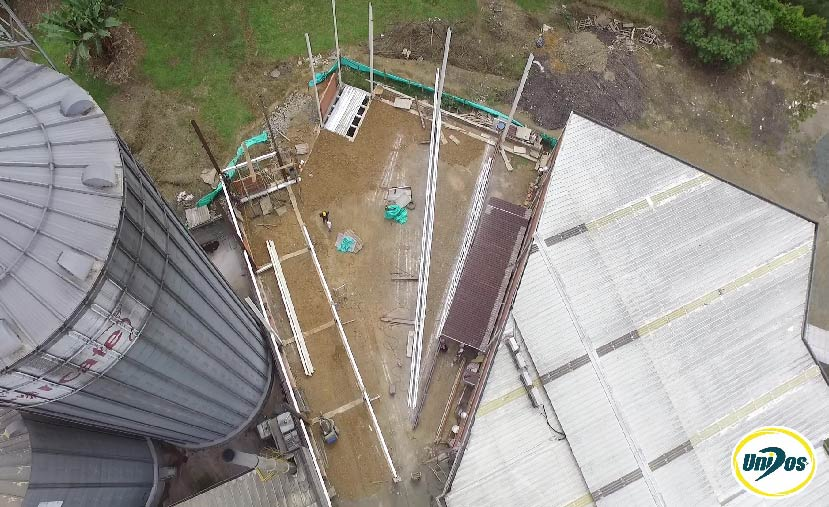
Iniciamos la construcción de nuestra bodega de almacenamiento de granos y nuestra segunda planta de producción de granos, un proyecto que fortalece nuestra capacidad logística y garantiza productos frescos y de calidad para nuestros clientes.
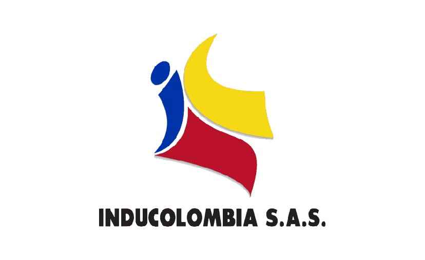
ASI-Unidos evoluciona y da paso a un nuevo capítulo: la transformación en un gremio que unifica el Fondo de Empleados FONASI y la plataforma logística comercial de marcas propias bajo la razón social de Inducolombia S.A.S., consolidando nuestra visión de crecimiento y fortaleza.
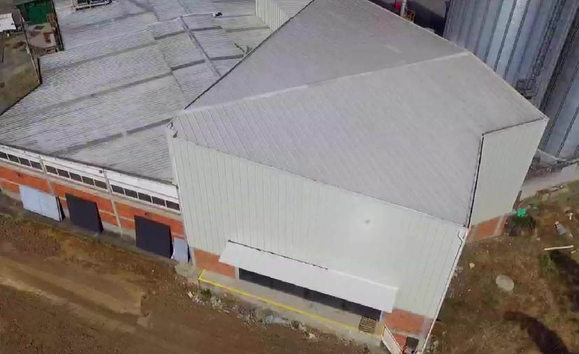
El 4 de julio de 2022 marcó un nuevo hito con la inauguración de nuestra bodega de almacenamiento de granos y la apertura de nuestra segunda planta de producción, fortaleciendo nuestra capacidad para ofrecer productos de calidad y atender la creciente demanda de nuestros clientes.
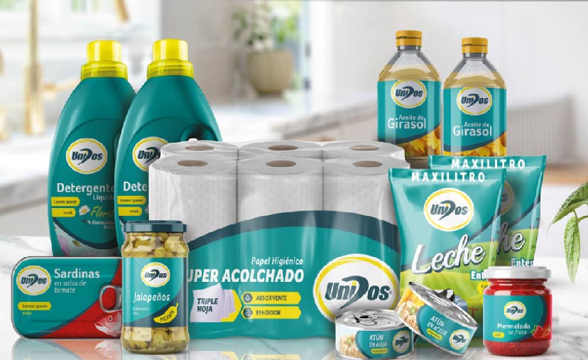
Actualizamos nuestro manual de marca e identidad corporativa de Unidos, rediseñando la presentación para iniciar con la actualización de nuetro portafolio con 500 referencias.
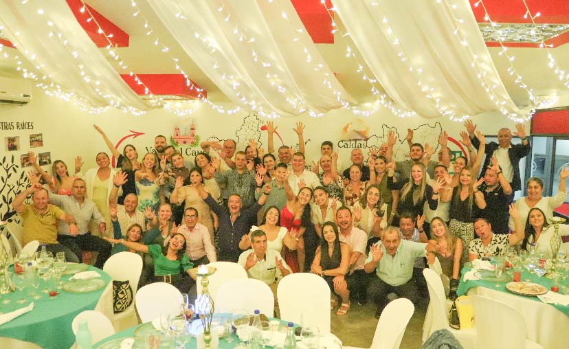
Celebramos 15 años de hacer realidad nuestro sueño: permanecer UNIDOS en el tiempo ofreciendo productos de calidad al precio justo. Hoy contamos con 75 puntos de venta en 6 departamentos y más de 500 referencias en nuestro portafolio, llevando excelencia y confianza a cada rincón donde estamos presentes.
Trabajamos UNIDOS para progresar.
Fortalecer los supermercados accionistas para el desarrollo y bienestar de nuestra gente.
Transparencia y confianza.
Conoce al equipo que hace posible que UNIDOS llegue a los hogares colombianos.
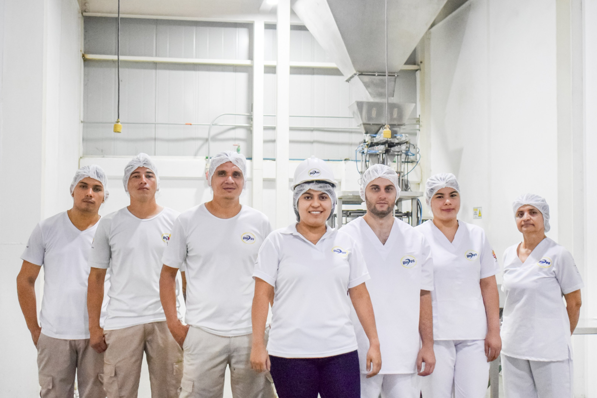
"Trabajamos en conjunto para que cada uno de los productos que lleguen a tus manos transmita la pasión por lo que hacemos"
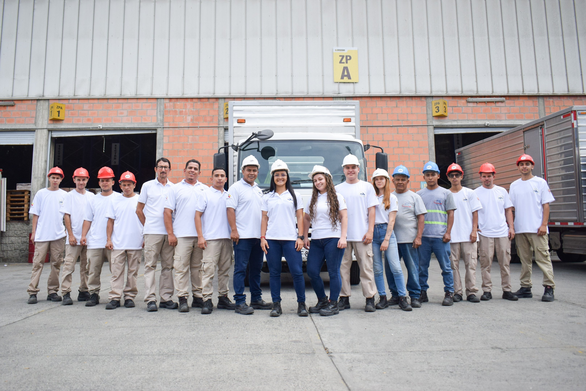
"Unidos somos más fuertes, por eso nos alineamos para cumplir con los estándares de calidad de nuestros procesos logísticos, brindando tranquilidad a nuestros clientes"
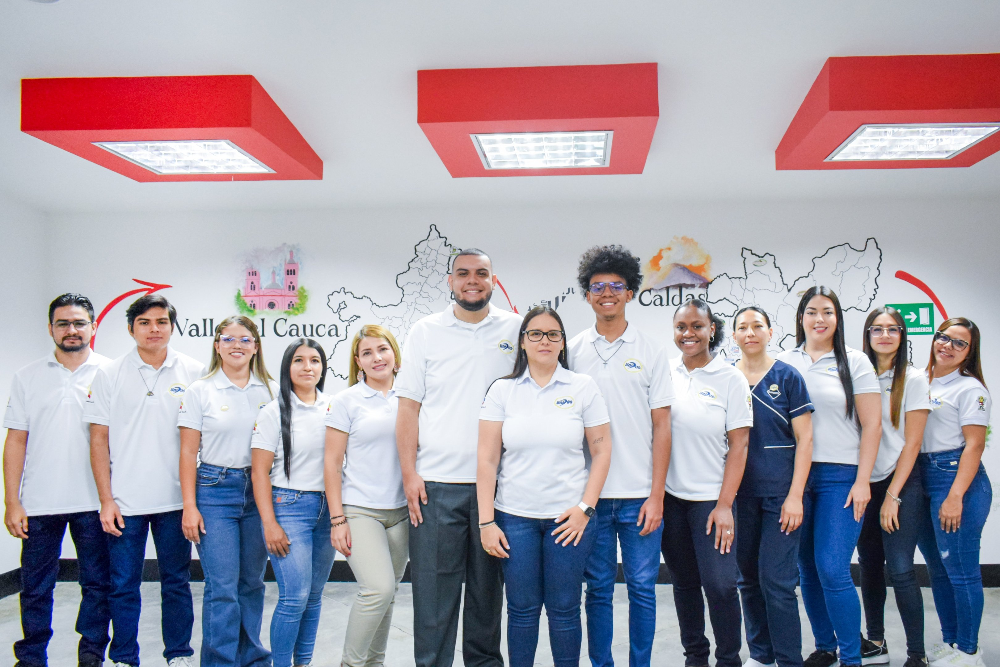
"Nos caracterizamos por el compromiso, la comunicación y el trabajo en equipo, estos valores son los pilares para cumplir con nuestros objetivos"